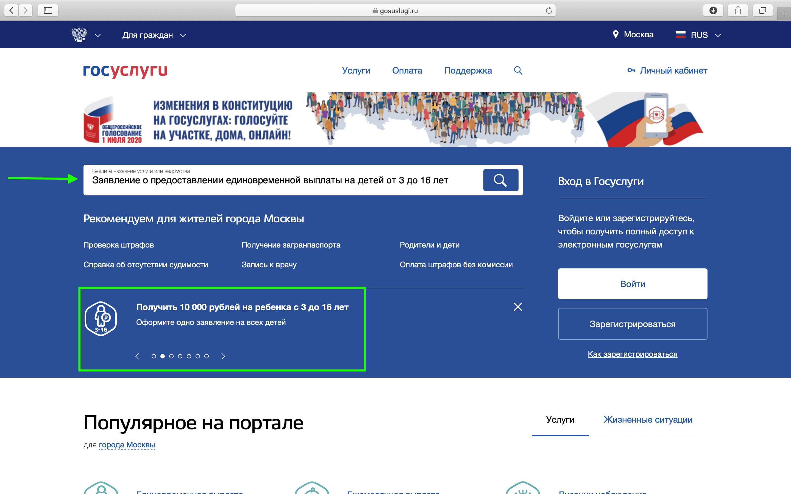
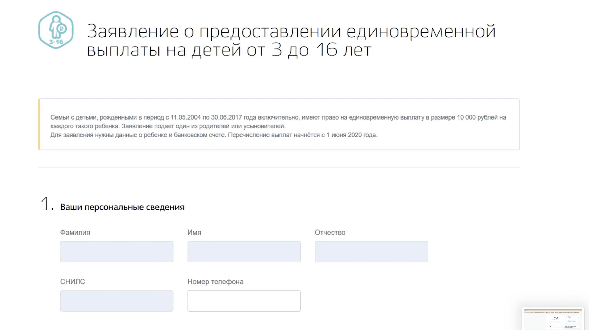
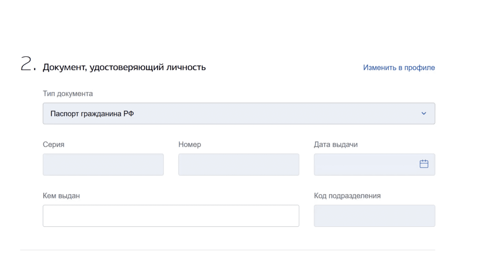
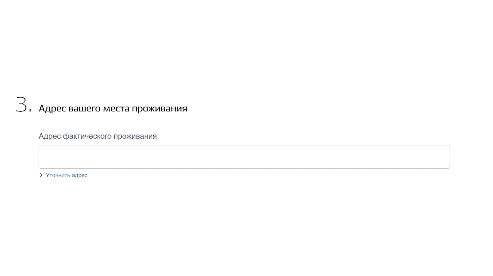
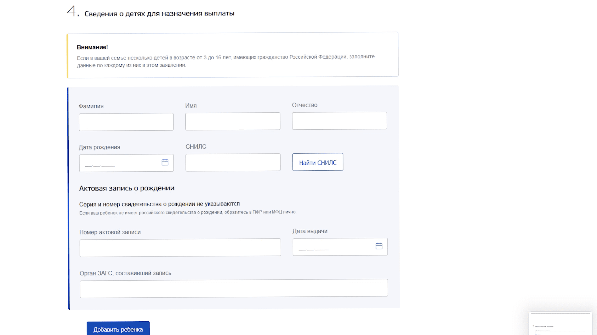
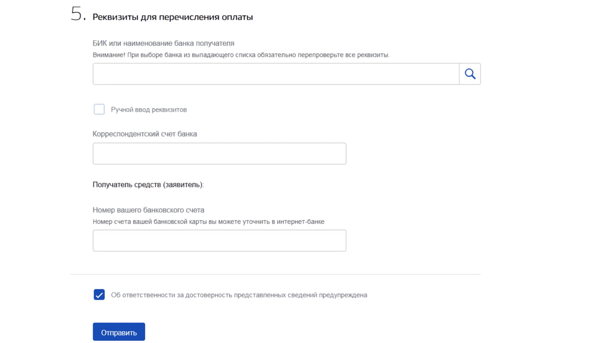

Как подать заявление по пособию на детей до 16 лет

Ищем в поисковике сайт госуслуг, переходим по ссылке, заходим в личный кабинет, вводим логин, пароль от своего аккаунта, если его нет, то создаем и входим в него.

На главной странице находим выплаты: "Заявление о предоставлении единовременной выплаты на детей от 3 до 16 лет". Начинаем оформлять заявление на пособие до 16 лет, если у вас активный профиль в госуслугах, то некоторые данные заполнятся автоматически.

И так первый этап, при подаче заявления на пособие до 16 лет, указать фамилию, имя, отчество, мобильный телефон, СНИЛС мамы.

Второй этап заполнение паспортных данных. Здесь просто вводим свои данные, если они не заполнялись автоматически.

Далее пишем свой полный домашний адрес.

Далее заполняем сведения о детях помимо фамилии, имени, отчества, номера СНИЛС, которые вы уже знаете, где найти. Необходимо также добавить номер актовой записи и название отдела выдавшего свидетельство о рождении.
В одном заявлении на пособие до 3 лет, можно заполнить сразу нескольких детей, добавляя их поочередно.

Далее вводим реквизиты для перечисления выплаты 10000 ₽ на ребенка до 16 лет. Автоматически выбираем банк, либо вводим вручную, затем указываем номер Корреспондентского счета банка получателя (он отличается от номера карты, смотрите в личном кабинете интернет банка или приложениях).
Финальный этап, поставьте галочку об ответсвенности про достоверность данных, этим вы подтверждаете, что никого не обманываете и у вас действительно пятеро детей. Нажимаем кнопку подать заявление, пройдет 10 дней до рассмотрения заявки, еще три дня до поступления денег на карту.
Если сайт портал все время зависает, подождите пару дней, ведь подать заявление на пособие до 3 лет через госуслуги можно вплоть до 1 октября. В любом случае свое пособие до 16 лет на ребенка в 10000 ₽ на ребенка, в конечном счете вы получите.